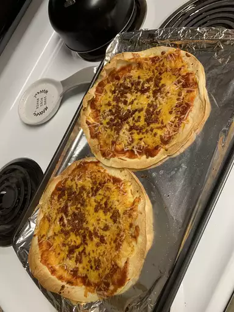

Tortilla

Descripcion
Las tortillas son un plato versátil que se puede preparar con diferentes ingredientes y métodos de cocción.
Se pueden hacer con carne, pollo, pescado, verduras o queso. Se pueden cocinar en una sartén, en el horno o en la parrilla.
Ingredientes:
- 500 g de patatas
- 1 cebolla
- 6 huevos
- Aceite de oliva virgen extra
- Sal
Preparacion:
- Pelar las patatas y cortarlas en rodajas finas.
- Cortar la cebolla en juliana fina.
- Calentar aceite de oliva en una sartén a fuego medio-bajo.
- Añadir las patatas y la cebolla a la sartén y cocinar a fuego lento durante 15-20 minutos, hasta que las patatas estén blandas y doradas.
- Escurrir las patatas y la cebolla del aceite y dejar que se enfríen un poco.
- Batir los huevos en un bol con una pizca de sal.
- Añadir las patatas y la cebolla a los huevos y mezclar bien.
- Calentar un poco de aceite de oliva en la sartén a fuego medio.
- Verter la mezcla de huevos en la sartén y cocinar durante 5-10 minutos por cada lado, hasta que la tortilla esté dorada y cuajada.
- Dar la vuelta a la tortilla con la ayuda de un plato o una tapa.
- Servir la tortilla caliente o fría.